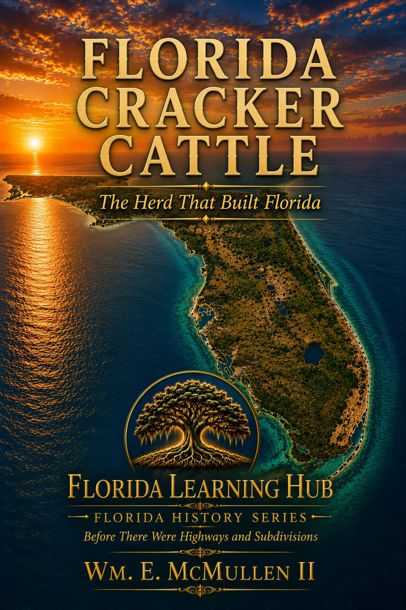

Florida Cracker Cattle
The Herd That Built Florida
Florida Cracker Cattle: The Herd That Built Florida tells the story of one of America's oldest cattle breeds and the remarkable role it played in shaping Florida.
More than a century before cattle ranching and cattle drives became symbols of the American West, cattle were already being raised, driven, and traded in Florida. Florida beef was helping feed armies and supply international markets, including Cuba. Descended from Spanish cattle brought to Florida beginning in the sixteenth century, Florida Cracker cattle became the foundation of a cattle culture that would endure for generations.
Florida's heat, humidity, insects, poor forage, pine flatwoods, palmetto scrub, and open range shaped a small, hardy, fertile, and remarkably self-sufficient animal uniquely suited to the Florida landscape. These cattle supported generations of Florida cattlemen and cow hunters and helped build an industry that fed armies, supplied communities, and carried Florida beef across the Gulf to Cuba and other markets beyond the state's borders.
The book follows the breed from its Spanish origins through the rise of Florida's cattle economy and explains the physical characteristics that made Cracker cattle so distinctive. It also examines the twentieth-century changes that nearly caused the breed to disappear, including widespread crossbreeding with larger commercial cattle and the end of Florida's open-range era.
At the center of the breed's survival is an extraordinary preservation effort that included Zona Bass and Zetta Hunt's 1970 donation of five heifers and a bull from their family herd. That small group—the Durrance Line—became a cornerstone of Florida's organized effort to preserve the breed.
Richly illustrated and carefully researched, Florida Cracker Cattle is more than the history of a cattle breed. It is the story of an often-overlooked chapter of American cattle history—and of the animals, people, landscape, and agricultural traditions that helped build Florida.
Book 1 in the Florida History Series — Before There Were Highways and Subdivisions.
Buy the Kindle Edition on AmazonAmazon availability and pricing may change.
Why This Story Matters
Florida's cattle industry is older than the familiar cowboy story of the American West. Its history connects Spanish colonial settlement, frontier survival, the Civil War, trade with Cuba, Punta Rassa, Jacob Summerlin, Florida's open range, and the preservation of a rare heritage breed.
About the Author
Wm. E. McMullen II is a seventh-generation Floridian, author, educator, and business owner with deep roots in Florida's history, agriculture, and communities. His career spans public service, corrections administration, law enforcement, education, business, technology, agriculture, and real estate. He served as a Director of Corrections and Law Enforcement Commander and as an adjunct instructor.
His writing includes Florida history and heritage, historical fiction, educational resources, and practical nonfiction. He is also the creator of Florida Learning Hub, an educational initiative dedicated to preserving and sharing Florida history, culture, agriculture, and heritage with students, teachers, families, and lifelong learners.
McMullen lives in Florida with his wife and continues to research, write, and develop books and educational resources for readers of all ages.
Explore more Florida history. Continue with Florida Learning Hub's growing collection of articles, books, and classroom resources about the people, places, and industries that shaped the state.
Return to Stories & Books